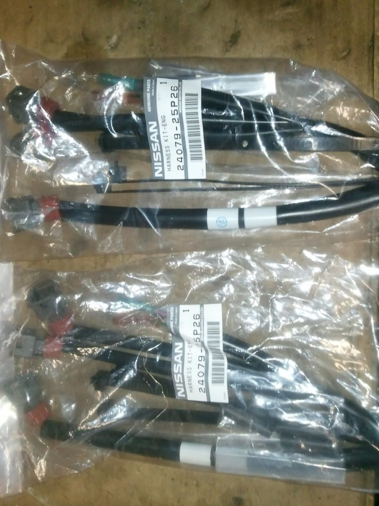
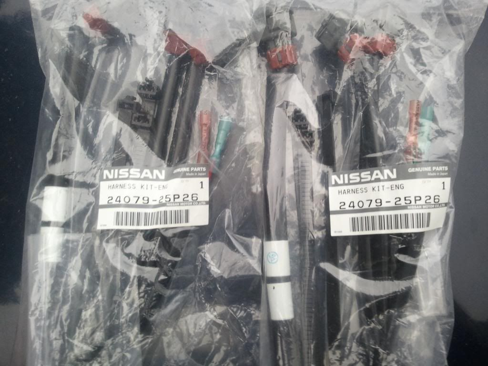

-
I found these injector wiring harnesses wrapped up in bubble wrap inside a box of misc. parts I was give several years ago by a customer who was getting rid of his Z and all his parts. They are brand new.
Do there look like the injector campaign harnesses?


1988 300ZX Turbo, Shiro Special #760
1988 300ZX Turbo Automatic (wife's car)
1991 Hard-body 2WD
http://zccw.org/zccw/?page_id=1215 -
i'm sure they are.
84 AE/Shiro #683/Shiro #820/84 Turbo -
Tape on them is a different color. I've only seen yellow/blue tape on post-campaign cars. But that doesn't mean they aren't that.
Maybe someone who has a Z that never underwent the campaign can chime in.'86 300ZXT GLL
'78 Datsun 280Z BP
'11 Saab 9-3 Aero XWD -
do they go from 3 to 1? if so then they are campaign harness.Hmmm, Whats next?
Full Size Bronco, smashing shit.
84ZXT -
Yes they do and all the connector, heat shrink sleeves and ties are included.shromy;345168 wrote: do they go from 3 to 1? if so then they are campaign harness.
1988 300ZX Turbo, Shiro Special #760
1988 300ZX Turbo Automatic (wife's car)
1991 Hard-body 2WD
http://zccw.org/zccw/?page_id=1215 -
What was the service for and how can I tell if its been done? Any problems with not getting it done?1986 300ZX factory Turbo 2+2 5 speed swap. 1985 Toyota MR2. Floor boards gone. Good fabrication practice.

-
Many dealerships are no long doing this service as the supply of free parts kit for it are no longer available.Tempast;345210 wrote: What was the service for and how can I tell if its been done? Any problems with not getting it done?
First check your wiring harness for the two band of blue or yellow tape that indicate its been done. If not, then contact your local dealer about the fuel injector service campaign. If that doesn't work, call Nissan North America.
1988 300ZX Turbo, Shiro Special #760
1988 300ZX Turbo Automatic (wife's car)
1991 Hard-body 2WD
http://zccw.org/zccw/?page_id=1215 -
What are the effects of not having this done? Ill check my car next week to see if it has been done but I'm not home at the moment.1986 300ZX factory Turbo 2+2 5 speed swap. 1985 Toyota MR2. Floor boards gone. Good fabrication practice.

Copyright © 2006–. All rights reserved. Privacy Policy